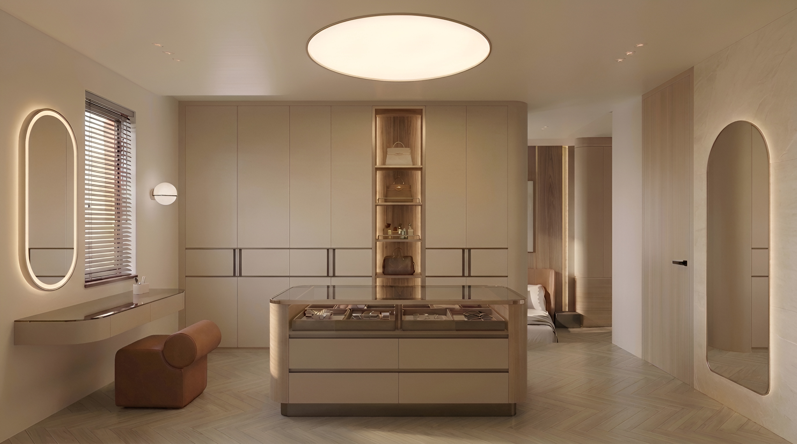
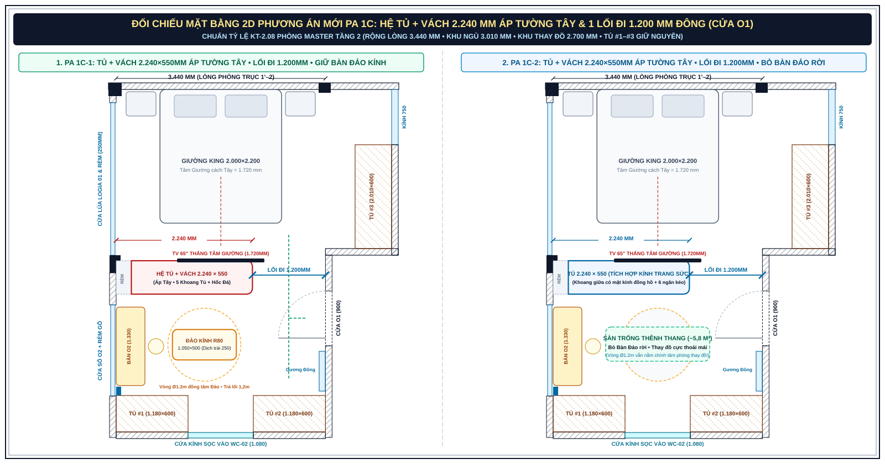
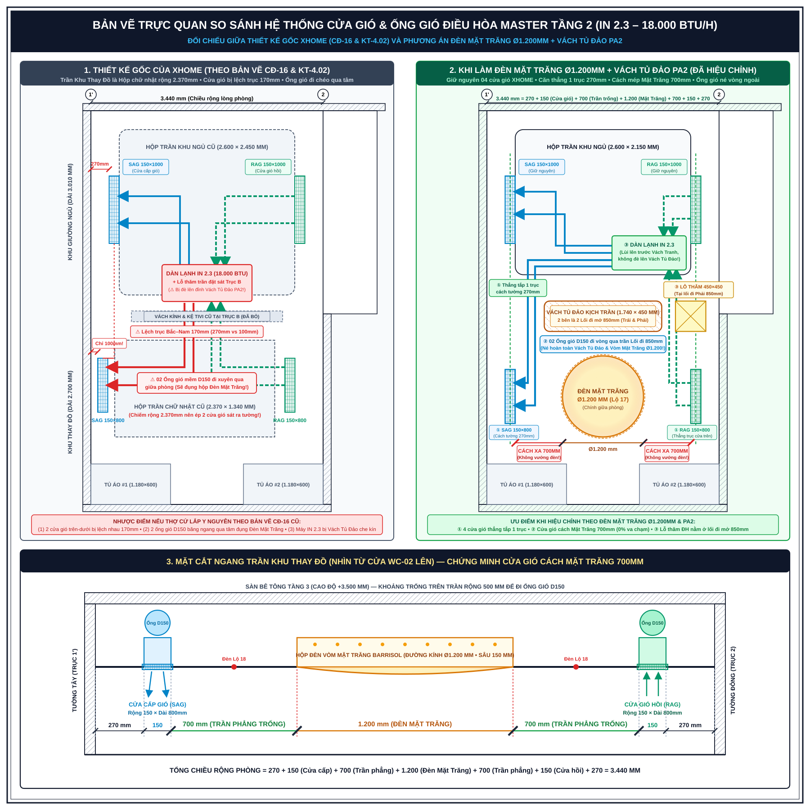
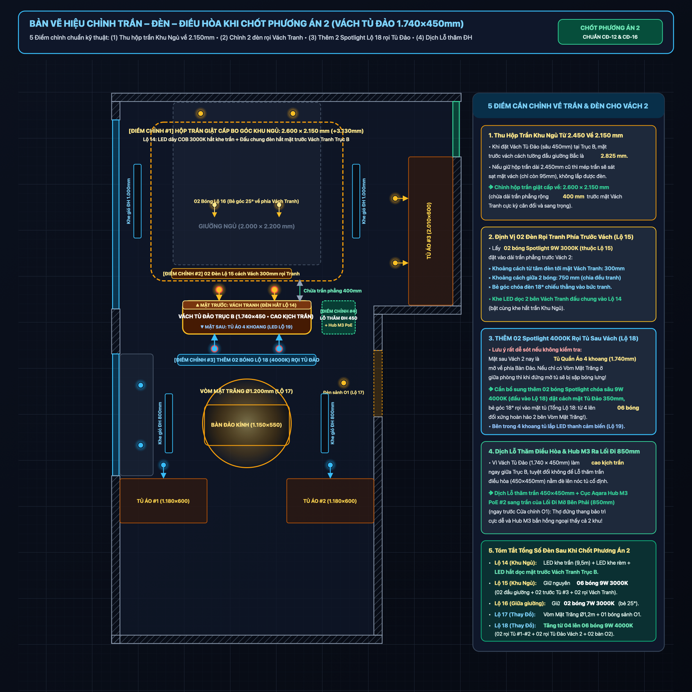
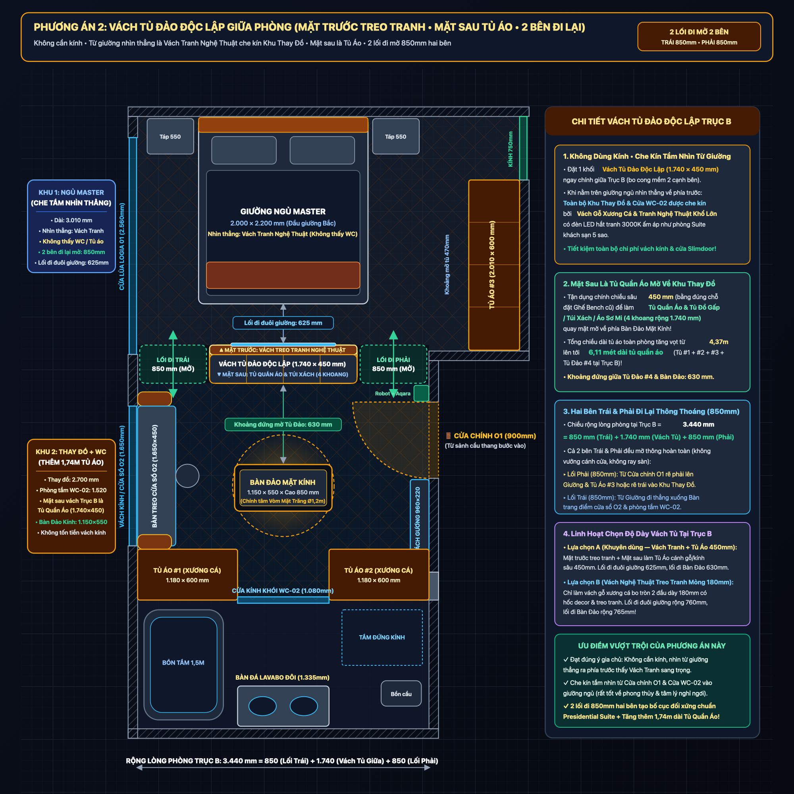

Giải Pháp Vách Tủ Đảo Độc Lập Giữa Phòng — Mặt Trước Treo Tranh Che Tầm Nhìn, Mặt Sau Làm Tủ Áo, 2 Bên Đi Lại Mở
Tại chính giữa Trục B đặt khối Vách Tủ Đảo Độc Lập Bo Cong 2 Đầu R120 (Rộng 1.740 × Sâu 450 × Cao kịch trần • 0% Lam dọc • 0% Xương cá bám bụi):
Mặt trước quay về Giường Ngủ Bắc (3.910mm) ốp phẳng Laminate vân đá Travertine mờ treo Tranh Nghệ Thuật Khổ Lớn che kín 100% tầm nhìn vào Khu Thay Đồ & WC-02;
Mặt sau quay về Bàn Đảo Trung Tâm là Hệ Tủ Quần Áo & Túi Xách 4 khoang; hai bên là 02 lối đi mở đối xứng rộng 850 mm (đồng bộ đủ Option A Vân Gỗ, Option B Bọc Da Kem Đá, Hiện Đại BT-04 / BT-05 & Warm Minimalist WM-06 — 0% Kính Tủ Đứng)!
850 + 1.740 + 850 = 3.440mm • Không cần vách kính hay cửa lùa • Lối đi đuôi giường 625mm2,36m) + Tủ #3 (2,01m) + Tủ Đảo Vách 2 (1,74m) + Bàn Đảo Mặt Kính2,15m + 02 đèn Lộ 15 rọi Tranh + 06 đèn Lộ 18 + Dịch Lỗ thăm ĐH ra lối đi 850mm✨ 1. Phối Cảnh 3D Phòng Master Tầng 2 — Tự Do Chọn Gu Vật Liệu (WM-08 Plus / WM-06) & Bố Cục Vách Ngăn Trục B
Tách riêng 2 hàng chọn độc lập: Anh/chị chọn thoải mái Gu vật liệu (WM-08 Plus nẹp Đồng Xước PVD ↔ WM-06 Warm Minimalist) phối cùng Bố cục Vách ngăn Trục B — gồm cả PA 1A Vách giữa 1,74m + 2 lối đi 850mm bản WM-08 Plus 2.7K HD vừa hoàn thiện, lẫn PA 1C-1 / PA 1C-2 (tủ áp Tây `2,24m`, 1 lối `1,2m`) & PA 1B (Bình phong treo 2 ty):

T2-V03 • WM-08 Plus PA 1C-1: Hốc Túi Veneer Đồng Champagne PVD & Ngắt Chỉ Đồng Hun Gọn Trước Bo R100
-
1. Hốc Trưng Bày Túi Xách & Nước Hoa Phủ
Plywood/Veneer InchemViềnĐồng Champagne PVD(0%Hoa Lá): Gỡ bỏ phù điêu hoa lá; lòng hậu & đợt kệ phủ vân Du Nhật / Óc chó khói (KES Kitami Ruester 29435 / Karma Grain) sơnInchemmờ kèm LED2700K, nâng cấp viền hốc & thanh chắn túi Đồng Champagne xước mờ sắc nét. -
2. Cánh Tủ
Karma Cashmere, Chỉ NốiĐồng Hun Mờ& Đầu Hồi BoR100Liền Mạch: Hệ tủ2,24máp sát Tường Tây dùng vân vải siêu mờKarma Cashmere; cặp tay nắm âm & đường chỉ nối Đồng Hun xước PVD được ngắt gọn trước góc boR100(khớp cả hình phản chiếu trong gương vòm bên phải) cho lối đi1,2mthẳng CửaO1êm ái tuyệt đối. -
3. Đảo
R80& Gương ViềnĐồng Champagne MảnhDưới VòngØ1,2m: Bàn đảo góc boR80bổ sung viền kính trên & chân đế gầm Đồng Hun PVD; gương oval bàn phấn, gương vòm & vành vòng đènØ1,2mđồng bộ viền đồng xước mảnh thanh lịch.
2752×1536, cuộn chuột zoom & kéo soi chi tiết đủ 5 góc xoay 360° Phòng Master:
Tủ #1–#2 hậu Plywood chống ẩm 9mm giáp WC-02, Tủ #3, khung tủ 2,24m & mảng cánh hông đầu giường) dùng Karma Cashmere siêu mờ / Plywood KES PLW S9 (Giorgio/Banstead Oak, Ash Dawn LP2 12105); 30% mảng nhấn & toàn bộ góc bo cong R80–R100 (tâm đầu giường, hốc túi xách, hồi R100 & góc bo R80 đảo kính) dùng Plywood phủ Veneer sơn PU Inchem siêu mờ (KES Kitami Ruester 29435 / Karma Grain) mượt liền không lộ mép chỉ và chống ngả vàng nắng Logia 01 / O2.
2752×1536 hoặc bật ngay lên trình xem:
⚖️ So Sánh Trực Tiếp Phương Án Mới PA 1C (Hệ Tủ 2,24m Áp Tường Tây + 1 Lối Đi 1,2m Gần Cửa O1): PA 1C-1 Giữ Bàn Đảo vs. PA 1C-2 Bỏ Bàn Đảo
Đẩy hệ tủ + vách Trục B (2.240 × 550mm) sát về Tường Tây (+0,5m chiều dài chứa đồ) và chừa 01 lối đi duy nhất rộng 1.200mm (1,2m) bên Đông thẳng Cửa O1; riêng Tivi 65" mặt Bắc đặt lệch về bên trái của vách để thẳng hồng tâm Giường 100% (1.720mm từ Tường Tây).

2.240×550mm áp Tường Tây + Lối đi 1.200mm bên Đông (thẳng Cửa O1) • Tâm TV 65" giữ nguyên tại 1.720mm thẳng tâm Giường
| Tiêu Chí So Sánh | PA 1A: Đảo Giữa 1,74m • 2 Lối 850mm | PA 1C-1: Tủ 2,24m Áp Tây • Lối 1,2m • Giữ Đảo | PA 1C-2: Tủ 2,24m Áp Tây • Lối 1,2m • Bỏ Đảo |
|---|---|---|---|
| Tổng chiều dài tủ quần áo | 6,11 m dài (Tủ 1–2: 2,36m + Tủ 3: 2,01m + Vách B: 1,74m) |
6,61 m dài (+0,5m khoang tủ áo Trục B = 5 khoang) | 6,61 m dài (+0,5m tích hợp kính đồng hồ/trang sức) |
| Sức chứa phụ kiện & trang sức | Bàn Đảo kính rời 6 ngăn kéo lớn (hiển thị đẹp kiểu Boutique) | Bàn Đảo kính 1.050×500 dịch trái + thêm 01 khoang tủ cao ở Trục B |
Khay kính trưng bày trang sức & ngăn kéo tích hợp âm ngay thân Tủ 2,24m |
| Độ kín đáo & chắn sáng Giường Ngủ | Cân đối, vẫn lọt chút ánh sáng qua khe đi 850mm bên Tây |
Chắn sáng 100% phía Tây (kín đáo bên bàn phấn O2 & rèm) |
Chắn sáng 100% phía Tây + Tách rõ 2 khu Ngủ / Thay Đồ |
| Độ thoáng sàn Thay Đồ & Lối đi | 2 lối 850mm đi được 2 bên giường • Khe đứng Đảo ~800mm |
Lối đi chính 1.200mm thẳng Cửa O1 • Khe đứng quanh đảo 650–800mm |
Rộng nhất (~5,8 m² sàn trống) + Lối chính 1.200mm không vướng đảo |
| Tận dụng điện & Trần KT-4.02 | Tâm Vòm Ø1,2m ở giữa phòng, dây thả cổ trần Trục B |
Vòm Ø1,2m dịch trái 250mm đồng tâm đảo • Lỗ thăm ĐH lối 1,2m cực rộng |
Vòm Ø1,2m giữ tâm phòng • Không cần cắt sàn đi gen Ø20 ra đảo |
| Chênh lệch chi phí nội thất | Mức chuẩn PA 1A |
+4,5 → 6,0 Tr ₫ (tăng +0,5m cánh & thùng tủ Trục B 550mm) |
-7,0 → 9,0 Tr ₫ so với PA 1C-1 (tiết kiệm cả tiền Đảo Kính rời & cắt sàn) |
📐 2. Bản Vẽ Kỹ Thuật 2D CAD Chuẩn XHOME Giao Thợ Thạch Cao & Thợ Điện (KT-4.02 — PA 1A WM-06 / PA 2)
Đã hiệu chỉnh đồng bộ theo đúng quy chuẩn hồ sơ kỹ thuật 2D CAD nền trắng của XHOME (KT-4.02 & CĐ-12) hỗ trợ đầy đủ PA 1A WM-06 Bo Cong Tinh Chỉnh (Vách 280mm âm TV 65" • Khe đứng ~800mm • Trần PA D sạch bụi không mỏ hắt hoặc PA C có mỏ hắt) lẫn PA 1B / PA 2 (Vách 450mm), kèm sơ đồ tận dụng 100% công tắc & đầu chờ cũ cho khu tủ quần áo thêm mới:

2.600×2.150mm, cổ trần Vách Trục B 1.740×280/450mm, Vòm Ø1.200mm, 06 đèn Lộ 18, Lỗ thăm ĐH 450×450mm & chú thích tận dụng trọn bộ công tắc/đầu chờ CĐ-12 / CĐ-04

270mm • (2) Cửa gió cách mép Mặt Trăng 700mm, ống gió D150 đi vòng ngoài • (3) Dịch máy IN 2.3 & Lỗ thăm 450×450 tránh Vách Tủ Đảo

Bảng Phân Lộ Đèn & 04 Điểm Hiệu Chỉnh Theo PA 1A WM-06 (280mm • TV 65") & PA 2 (450mm)
-
Lộ 14 (Nút 1 Công tắc đôi
14,15— Cửa O1 & Đầu giường):
• [Điểm chỉnh #1]: Thu ngắn Hộp Trần Khu Ngủ từ2.450 mmvề2.150 mm(rộng2.600 × 2.150 mm, lòng+3.130 mm) để chừa dải trần phẳng rộng395 mmtrước mặt Vách Trục B.
• Tùy chọn TrầnPA D (WM-06 Sạch Bụi)vs.PA C: Nếu đóng PA D sạch bụi (0% mỏ hắt) thì bỏ khe LED mỏ trần, đưaLộ 14về bật LED Hốc Rèm250mm+ 02 khe LED dọc Vách TV/Tranh mặt Bắc Trục B; nếu đóngPA Cthì bật chung cả khe hắt bo góc trần. -
Lộ 15 (Nút 2 Công tắc đôi
14,15— Giữ nguyên 06 Spotlight 9W 3000K Khu Ngủ):
•02 bóngđầu giường (cách tường Bắc300–350 mm): Bẻ góc15°rửa sáng vách Kem Greige / Travertine đầu giường.
•02 bóngtrước hốc tường Đông (dịch ra khoảng trống470 mmtrước mặt Tủ #3, cách tường gạch hậu780 mm): Bẻ góc18°rọi thẳng vào lòng Tủ Áo #3 thêm mới!
• [Điểm chỉnh #2]:02 bóngtrước mặt Bắc Vách Trục B (khoét cách mặt vách250–300 mm, hai bóng cách nhau750 mm): Bẻ góc18°rọi nhấn mảng đá Travertine & TV 65" The Frame (PA 1A) / Tranh (PA 1B/2). -
Lộ 16 (Công tắc đơn
16tại Đầu giường): Gồm02 Spotlight 7W 3000Kgiữa giường (bắt buộc bẻ chóa25°về phía Nam chống chói mắt khi nằm) +02 đèn đọc sáchđầu giường. -
Lộ 17 (Nút 1 Công tắc 3 nút
17,18,19tại Cửa O1 — Ánh sáng Chill chủ đạo): Vòm Tròn Mặt Trăng BarrisolØ1.200 mm(60W) chính tâm Bàn Đảo + 01 bóng sảnh cửaO1(kèm khe LED hắt trần Thay Đồ nếu chọnPA C; bỏ khe hắt nếu chọn trần phẳng sạch bụiPA D). -
Lộ 18 (Nút 2 Công tắc 3 nút
17,18,19— [Điểm chỉnh #3] Tăng từ 04 lên 06 Spotlight 9W 4000K CRI≥92):
•02 bóngphía Bắc (cách mặt sau Vách Trục B300–350 mm): Bẻ góc18°rọi vào hốc túi xách / tủ mặt Nam Vách Trục B (chống sập bóng lưng khi đứng tại khe đứng~800mmcủaPA 1A!).
•02 bóngphía Nam trước Tủ #1 & #2 (cách tủ 300 mm): Bẻ góc18°rọi sâu vào lòng Tủ Áo #1, #2 và Gương toàn thân Đông.
•02 bóngphía Tây trên Bàn treo cửa sổO2& Gương Oval tường đặc (cách tường Tây 300 mm). -
Lộ 19 (Nút 3 Công tắc 3 nút
17,18,19— Gom LED Nội Thất 3000K) & [Điểm chỉnh #4] Lỗ Thăm ĐH:
• Thả dây trực tiếp từ trần Trục B xuống mặt Nam Vách 2 + luồn genØ20âm sàn ra Bàn Đảo Kính + gom chung Tủ #1, #2 (+1.6M) & 2 Gương LED vào 1 nút bấm duy nhất!
• Dịch Lỗ thăm ĐH (450×450 mm) + CụcAqara Hub M3 PoE #2sang trần Lối đi mở Phải (850 mm, trước CửaO1) để không bị đỉnh Vách Trục B che khuất.
⚡ Bảng Tận Dụng 100% Công Tắc (CĐ-12) & Ổ Cắm/Đầu Chờ (CĐ-04) Thiết Kế Cũ Cho Khu Tủ Quần Áo Thêm Mới (0 Đế Âm Phát Sinh)
Công Tắc / Đầu Chờ Cũ (CĐ-12 / CĐ-04) |
Chức Năng Trong Bản Vẽ Cũ | Cách Tận Dụng Cho Khu Tủ Quần Áo & Đảo Thêm Mới | Việc Thợ Điện Cần Làm |
|---|---|---|---|
| 1. Nút 3 Công tắc cửa O1 Lộ 19 • Aqara H1 (17,18,19) |
Đèn tường vách bàn phấn cũ tại Trục B + 02 đầu chờ LED Tủ Nam. | Gom toàn bộ LED Nội Thất Khu Thay Đồ về 1 nút bấm duy nhất: (a) Thả xuống mặt Nam Vách Trục B (LED hốc túi xách Travertine / 4 khoang tủ đảo); (b) Luồn ống gen Ø20 âm sàn ra Bàn Đảo Mặt Kính (LED soi khay trang sức); (c) Đấu chung 2 đầu "CHỜ LED TỦ +1.6M" của Tủ Áo #1 & #2 và 2 đầu "CHỜ LED GƯƠNG +1.2M". |
Đưa đầu dây Lộ 19 giữa trần Trục B chia nhánh thả trần + xuống 4 đầu chờ Nam/Đông/Tây. |
| 2. Nút 2 Công tắc cửa O1 Lộ 18 • Aqara H1 (17,18,19) |
06 bóng Spotlight chiếu sáng chung Khu Thay Đồ. |
Giữ nguyên đúng 06 đầu dây Lộ 18 trên trần, chỉ dịch tọa độ khoét lỗ theo tủ mới: 02 bóng Bắc (cách mặt sau Vách Trục B 300–350mm, bẻ 18° rọi vào mặt tủ/hốc túi xách sau Vách B) + 02 bóng Nam (cách Tủ #1, #2 300mm) + 02 bóng Tây (Bàn O2). |
Khoét đúng 06 lỗ trần theo tọa độ bảng trên KT-4.02, giữ nguyên 1 dây lộ về cửa O1. |
| 3. Nút 1 Công tắc cửa O1 Lộ 17 • Aqara H1 (17,18,19) |
Khe LED hắt trần Khu Thay Đồ + 01 bóng sảnh cửa O1. |
Tận dụng cấp nguồn cho Vòng Chiếu Xuyên Sáng Barrisol Ø1.200mm (60W) chính tâm Bàn Đảo Kính + 01 bóng sảnh cửa O1 (nếu đóng trần phẳng sạch bụi PA D thì bỏ khe hắt trần Thay Đồ, chỉ giữ Vòng Ø1.200mm + bóng O1). |
Kéo dây Lộ 17 vào hộp đèn Barrisol Ø1.200mm tại tâm phòng Thay Đồ. |
| 4. Nút 2 Công tắc Khu Ngủ Lộ 15 • Cửa O1 & Đầu Giường |
06 Spotlight Khu Ngủ (có bóng nằm giữa Hốc Đông 1.070mm). |
Vì Hốc Đông nay đặt Tủ Áo #3 thêm mới (2.010×600mm), tận dụng đầu dây Lộ 15 trong hốc để khoét 02 bóng Spotlight ở khoảng trần trống 470mm trước mặt cánh Tủ #3 (cách tường hậu Đông 780mm = cách mặt tủ 180mm, bẻ 18° rọi lòng Tủ #3); 02 bóng rọi Vách Trục B + 02 bóng đầu giường. |
Tránh đè lên nóc Tủ #3 (600mm); khoét 2 bóng tại tim cách tường hậu 780mm. |
| 5. Nút 1 Công tắc Khu Ngủ Lộ 14 • Cửa O1 & Đầu Giường |
Khe LED hắt trần Khu Ngủ + khe LED hốc rèm. | Tận dụng thả 1 nhánh xuống mặt Bắc Vách Trục B (nuôi 2 khe LED dọc đá Travertine hai bên TV 65" The Frame / Vách Tranh) + LED Hốc Rèm 250mm. Nếu chọn trần PA D sạch bụi không mỏ hắt, Lộ 14 chuyên bật LED Rèm + Vách TV rất dịu mắt. |
Thả sẵn 1 dây Lộ 14 tại tâm cổ trần Vách Trục B xuống nóc vách gỗ. |
| 6. Cụm Ổ TV Hốc Đông (Tủ #3) S1 (+1.2M / +0.4M) & LAN (+1.2M) |
Cụm ổ cắm + mạng Tivi cũ đặt ở Hốc Đông 2.010mm (CĐ-04 / CĐ-09). |
• Giữ ổ S1 (+1.2M) ngay sau lưng/khoang kỹ thuật Tủ Áo #3 để cắm Driver 24V + Cảm biến mở cánh LED bên trong 4 khoang Tủ #3 (mở cánh tự sáng, không cần kéo công tắc từ Khu Thay Đồ).• Rút ổ S1 (+0.4M) + dây LAN (+1.2M) cũ lên trần kéo thẳng ra Vách Trục B cấp nguồn & mạng cho TV 65" The Frame + cục Aqara Hub M3 PoE #2. |
Khoét hậu tủ tại vị trí ổ S1 (+1.2M); luồn ống cứng kéo dây TV + LAN ra giữa trần Trục B. |
| 7. Đầu chờ Bàn phấn O2 (Tây) "CHỜ LED GƯƠNG +1.2M" & S1 |
Ổ cắm gầm bàn/mặt bàn và đầu chờ LED gương đặt giữa cửa sổ O2. |
Giữ nguyên ổ S1 (+0.4M) + LAN gầm bàn và S1 (+1.2M) mặt bàn dưới cửa sổ O2; chỉ dịch đầu dây "CHỜ LED GƯƠNG +1.2M" sang phải ~700mm vào giữa mảng tường đặc 610mm (giữa O2 & Tủ #1) để đấu cho Gương Oval LED (PA 1A) mà không che mất cửa sổ. |
Đánh dấu chuyển đầu dây chờ LED gương sang mảng tường đặc 610mm cạnh O2. |
📐 3. Mặt Bằng Nội Thất 2D Đã Chốt (Phương Án 2: Vách Tủ Đảo 2 Mặt Tại Trục B) & Đối Chiếu Điện/Mạng (CĐ-04, CĐ-09)
Đối chiếu trực tiếp giữa mặt bằng công năng Phương Án 2 (đặt Vách Tủ Đảo 1.740 × 450 mm tại Trục B, 2 bên đi lại mở 850 mm) với 04 bản vẽ gốc của XHOME (KT-2.08 Tường xây, CĐ-12 Chiếu sáng, CĐ-04 Cấp điện ổ cắm, CĐ-09 Điện nhẹ):



⚡ Tổng Hợp 06 Mục Đã Khớp 100% & 04 Điểm Cần Dặn Thợ Khi Thi Công
-
✅ 06 Hạng mục ĐÃ KHỚP 100% giữa Công Năng Mới và Bản Vẽ Điện/Đèn Cũ:
1) Hai bên Đầu Giường (Tường Bắc): 2 cụm ổ cắmS1 (+0.7M)và công tắc(14,15)+(16)cách nhau2.140 mm(cách tường Tây500 mm, cách trục 2800 mm) — vừa khít hai bên mép Giường 2,0m (ngay trên 2 Tab đầu giường550 mm).
2) Bàn Làm Việc & Bàn Phấn Cửa Sổ O2 (Tường Tây): Giữ nguyên ổ cắmS1 (+0.4M)+ mạngLAN (+0.4M)gầm bàn vàS1 (+1.2M)mặt bàn dưới cửa sổ; chỉ dịch dây"CHỜ LED GƯƠNG +1.2M"sang mảng tường đặc610mmbên cạnh O2 cho Gương Oval (PA 1A).
3) Cụm Công Tắc Cửa Vào O1 & Ổ Cắm Robot Hút Bụi: Nằm trên mảng tường gạch Đông490 mmsát cửa O1 (không bị ảnh hưởng khi bỏ vách Tivi cũ), tận dụng 100% 02 đế Aqara H1(17,18,19)+(14,15)và ổS1 (+0.25M)cho Robot hút bụi.
4) Hệ Tủ Áo #1, #2 & Gương Toàn Thân: Đã có sẵn 2 đầu chờ"CHỜ LED TỦ +1.6M"ở 2 góc Nam và 1 đầu chờ"CHỜ LED GƯƠNG +1.2M"ở tường Đông.
5) Hốc Rèm Tự Động & Đèn Ban Công Logia 01: Đã có sẵn nguồn rèm góc Tây-Bắc và công tắc(26)cạnh cửa lùa.
6) Phòng Tắm Master WC-02: Khớp 100% công tắc(20..25), BNL20A, cảm biếnFP1E, ổ cắm Lavabo đôiS2 (+1.2M)và ổ Bồn cầuS2 (+0.4M). -
⚠️ 04 Điểm Giao Cắt Cần Dặn Thợ Trần & Thợ Điện Để Khớp Tuyệt Đối 100%:
• Điểm 1 — Vị trí khoét đènLộ 15trước Tủ Áo #3 (Hốc Đông1.070 mm): TrênCĐ-12cũ, đènLộ 15vẽ ở giữa hốc (nơi sẽ đặt thùng Tủ #3 sâu600 mm). Dặn thợ trần thạch cao: Khoét 02 bóng SpotlightLộ 15ở khoảng trống470 mmphía trước mặt Tủ #3 (cách tường gạch hậu780 mm, tức cách mặt cánh tủ180 mm) để tủ kịch trần không che mất đèn!
• Điểm 2 — Tận dụng ổ điệnS1 (+1.2M)& dời dâyLAN (+1.2M)sau lưng Tủ #3: Giữ nguyên ổS1 (+1.2M)trên tường gạch2.010 mmđể cắm bộ nguồn Driver LED bên trong Tủ #3; còn sợi cáp mạngLAN (+1.2M)(vốn cho Tivi cũ) thì rút đưa lên trần Trục B để cắm trực tiếp vào cục Aqara Hub M3 PoE #2 (điều khiển hồng ngoại máy lạnh mà không tốn thêm cáp mạng mới).
• Điểm 3 — Đường điện âm sàn cho Bàn Đảo Mặt Kính (Do đã bỏ vách Tivi): Bỏ ổ cắm và điểm đèn trên vách ngăn cũ tại Trục B; luồn ống genØ20đi âm dưới sàn ra đúng tâm Khu Thay Đồ (cách tường Tây1.400 mm, cách tường WC1.050 mm) để cấp điệnLộ 19cho đèn LED ngăn kéo trang sức của Bàn Đảo Mặt Kính.
• Điểm 4 — Cữ chôn Đế Âm Vuông Sino86×86 mmtại 3 cụm ghép đôi/ba: Tại Cửa vào O1, Đầu giường bên phải và Gầm bàn O2, nhắc thợ điện kê cữ ống PVCΦ20(dài1,5 cm) giữa 2 đế Sino để lắp vừa khít mặt vuông Aqara H1 và Schneider AvatarOn.
📋 4. Bảng Thông Số Kỹ Thuật & Kích Thước Đóng Nội Thất Chi Tiết (Đã Chốt Phương Án 2: Vách Tủ Đảo 2 Mặt Tại Trục B)
Bảng tổng hợp 12 hạng mục nội thất và M&E của toàn bộ Phòng Master Tầng 2 sau khi chốt Phương Án 2:
| STT | Phân Khu | Hạng Mục Nội Thất / Kỹ Thuật | Vị Trí Chuẩn Theo KT-2.08 | Kích Thước (D × R × C) | Quy Cách Vật Liệu & Lưu Ý Thi Công |
|---|---|---|---|---|---|
| 01 | Ranh Giới Trục B | Vách Tủ Đảo Độc Lập 2 Mặt Tại Trục B | Đặt chính giữa Trục B (chừa 2 lối đi mở Trái 850mm & Phải 850mm) |
1.740 × 450 × 2.650 mm |
Chuẩn BV-T2.02 (0% Lam dọc • 0% Xương cá): • Mặt trước (quay về Giường): Hai biên bo cong R120 + mảng phẳng Laminate vân đá Travertine hắt LED dọc 3000K + treo Tranh (1.200×900mm) & kệ console.• Mặt sau (quay về Bàn Đảo): Tủ Áo & Túi Xách 4 khoang ( Tone 1 & 2 có 2 cánh kính giữa; Tone 3 đóng 4 cánh Gỗ Nâu Đen LK 4512 A đặc 100%, 0% kính). |
| 02 | Khu Thay Đồ | Bàn Đảo Phụ Kiện Trung Tâm | Chính tâm Khu Thay Đồ (dưới Vòm trần Khu Thay Đồ) | 1.150 × 550 × 850 mmThảm dệt phẳng: 1.700 × 2.060 mm |
Khung bắt sàn Plywood 18mm + bệ chân Laminate Travertine + 6 ngăn kéo nhung. Tone 1 & 2 lắp mặt kính 10mm soi trang sức LED (13,0tr); Tone 3 lắp mặt đá LK 2148 ST đặc khít 0% kính (11,5tr). Đi ống gen Ø20 âm sàn! |
| 03 | Khu Thay Đồ | Cặp Tủ Áo Phẳng #1 (Tây) & #2 (Đông) | Tường Nam (2 bên lối vào WC-02 — giáp tường ướt) | 1.180 × 600 × 2.650 mm(× 02 hệ = 2,36m dài) |
Chuẩn chống ẩm BV-T2.03: Bắt buộc hậu Plywood 9mm + đáy & đợt Plywood 18mm chịu nước; cánh phẳng MDF lõi xanh 17mm (MS 334 / MS 104 hoặc Tone 3 full Gỗ Nâu Đen LK 4512 A 0% kính, giảm -5,5tr). |
| 04 | Khu Thay Đồ | Hệ Cửa Kính Khói Vào WC-02 | Chính giữa Tủ #1 và Tủ #2 | 1.080 × 2.400 / 2.650 mm |
Cửa 2 cánh khung nhôm mảnh màu đen/đồng tối; dùng kính hộp có rèm sáo âm trong kính hoặc kính sóng mờ khói đen phẳng mặt với 2 hệ tủ gỗ. |
| 05 | Khu Thay Đồ | Bàn Phấn + Bàn Làm Việc Treo Tường | Tường Tây — Ngay dưới Cửa sổ O2 (1.250 mm) |
1.330 × 500 × 180 mm(Cao độ mặt bàn +750mm) |
Bàn treo tường giấu khung thép chịu lực, 2 đầu bo tròn R60mm, gồm 2 ngăn kéo âm + Rèm sáo gỗ tối màu lọt lòng cửa sổ O2 + Gương tròn LED cảm ứng + Đôn cam Ø380mm. |
| 06 | Khu Thay Đồ | 2 Cột Bo Tròn LED + Kệ Túi Xách Kính Đen | Tường Tây — Đoạn tường đặc 610 mm (giữa Cửa sổ O2 & Tủ #1) |
Kệ âm: 440 × 380 × 2.650 mm2 Cột bo: R75 × 170 mm |
Khớp chính xác vào đoạn tường xây đặc 610 mm bên cạnh cửa sổ O2: làm kệ gỗ tối màu + đợt kính đen gắn LED thanh 3000K trưng bày túi xách, nước hoa; 2 mép cửa sổ làm cột bo tròn hắt LED dọc. |
| 07 | Khu Thay Đồ | Hệ Vách Bọc Cột 330mm + Gương Soi Toàn Thân | Tường Đông — Từ mép Cửa chính O1 đến Tủ #2 |
960 × 220 × 2.650 mm |
Xử lý dứt điểm cột BTCT 330mm lồi 11cm: Không đặt tủ sâu 600mm gây cấn cửa O1; dùng hệ vách ốp gỗ mỏng 220mm kết hợp Gương soi toàn thân hắt LED dọc và hốc nước hoa âm tường. |
| 08 | Trần & Đèn | Vòm Tròn Mặt Trăng Barrisol + 06 Spotlight Chóa Sâu (Lộ 18) | Tâm trần Khu Thay Đồ + Trước Tủ #1–#2, Tủ Đảo Vách 2 & Bàn O2 | Vòm tròn: Ø1.200 mm06 Spotlight: 9W 4000K CRI≥92 |
1) Vòm tròn Ø1.200mm căng màng PVC xuyên sáng in UV vân Mặt Trăng + LED ma trận 60W (Lộ 17).2) 06 bóng Spotlight chóa sâu lòng đen ( Lộ 18): 02 bóng trước Tủ #1–#2 (bẻ 18° vào tủ) + 02 bóng cách mặt sau Vách 2 350mm (bẻ 18° rọi vào 4 khoang Tủ Đảo) + 02 bóng trên Bàn cửa sổ O2. Dịch Lỗ thăm ĐH 450×450mm sang trần lối đi Phải 850mm. |
| 09 | Khu Giường Ngủ | Giường King Bệ Gỗ R60 + Vách Đầu Giường Phẳng | Tường Bắc (Trục C — rộng 3.910 mm) |
Giường: 2.000 × 2.200 mm2 Táp treo: 550 × 420 mm |
Chuẩn chống bám bẩn BV-T2.01 (0% Vải nỉ xù): Khung bệ & tựa đầu giường bằng Plywood 18mm bo tròn R60 + 7 thang thép kẽm 40×40; vách phẳng Laminate Travertine hắt LED dọc 3000K + ghế đôn đuôi giường bọc da bò trơn. |
| 10 | Khu Giường Ngủ | Hệ Tủ Áo Lớn #3 Trong Hốc Tường Đông 1.070mm | Tường Đông — Áp lưng vào đúng đoạn tường gạch 2.010 mm ngăn với Khu Thư Giãn (dưới Vách kính O2 750 mm) |
2.010 × 600 × 2.650 mm(Trước tủ còn trống 470 mm trong hốc 1.070 mm) |
Trên bản vẽ KT-2.08, toàn bộ hốc tường Đông đua ra 1.070 mm so với Trục 2 (gồm Vách kính O2 750 mm ở đoạn đầu + Tường gạch đặc 2.010 mm ở đoạn sau trên cùng một đường thẳng). Tủ #3 (2.010 × 600 mm) đặt tựa lưng vào đúng đoạn tường gạch 2.010 mm, hoàn toàn không che Vách kính O2 và còn dư 470 mm khoảng đứng mở tủ phía trước. |
| 11 | Khu Giường Ngủ | Cửa Lùa Logia 01 & Vách Kính Khu Thư Giãn | Tường Tây (2.560 mm) & Tường Đông (750 mm) |
Cửa lùa: 2.560 × 2.400 mmVách kính: 750 × 2.400 mm |
Tường Tây lắp rèm 2 lớp (Voan trắng + Vải xám kem âm trần); Vách kính 750 mm tường Đông lấy trọn tầm nhìn mảng xanh từ Khu Thư Giãn Tầng 2 vào đầu giường. |
| 12 | Phòng Tắm WC-02 | Bố Trí 3 Khoang Chuẩn KT-5.03 (Đồng Bộ Cửa Kính) | Phía Nam cùng (Trục A — 3.440 × 1.520 mm) |
Trái 1.075 • Giữa 1.335 • Phải 1.090 mm |
Khoang giữa đặt Bàn đá Lavabo đôi + Gương LED thẳng trục với Cửa kính khói 1.080 mm; Khoang trái đặt Bồn tắm nằm 1,5m; Khoang phải đặt Bồn cầu & Vách kính tắm đứng Slimdoor. |